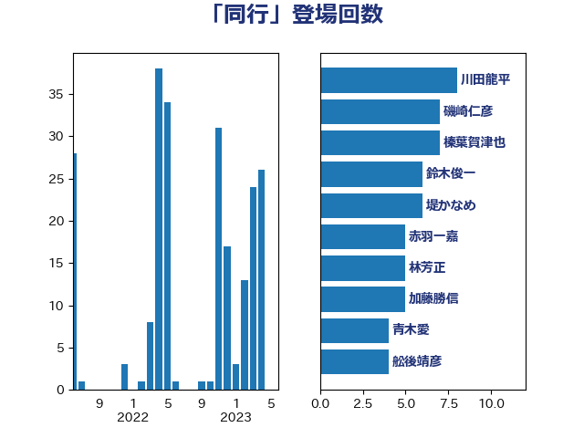

単語「同行」

| 川田龍平 | 立憲民主党 | 8 回 |
| 磯崎仁彦 | 自由民主党 | 7 回 |
| 榛葉賀津也 | 国民民主党 | 7 回 |
| 鈴木俊一 | 自由民主党 | 6 回 |
| 堤かなめ | 立憲民主党 | 6 回 |
| 赤羽一嘉 | 公明党 | 5 回 |
| 林芳正 | 自由民主党 | 5 回 |
| 加藤勝信 | 自由民主党 | 5 回 |
| 青木愛 | 立憲民主党 | 4 回 |
| 舩後靖彦 | れいわ新選組 | 4 回 |
| 篠原豪 | 立憲民主党 | 4 回 |
| 岸田文雄 | 自由民主党 | 4 回 |
| 大西健介 | 立憲民主党 | 4 回 |
| 一谷勇一郎 | 日本維新の会 | 4 回 |
| 本村伸子 | 日本共産党 | 3 回 |
| 早稲田ゆき | 立憲民主党 | 3 回 |
| 小西洋之 | 立憲民主党 | 3 回 |
| 天畠大輔 | れいわ新選組 | 3 回 |
| 齋藤健 | 自由民主党 | 2 回 |
| 萩生田光一 | 自由民主党 | 2 回 |
| 若宮健嗣 | 自由民主党 | 2 回 |
| 秋本真利 | 自由民主党 | 2 回 |
| 福島みずほ | 社会民主党 | 2 回 |
| 石橋通宏 | 立憲民主党 | 2 回 |
| 河野太郎 | 自由民主党 | 2 回 |
| 永岡桂子 | 自由民主党 | 2 回 |
| 松川るい | 自由民主党 | 2 回 |
| 島尻安伊子 | 自由民主党 | 2 回 |
| 山岸一生 | 立憲民主党 | 2 回 |
| 小倉將信 | 自由民主党 | 2 回 |
| 大野敬太郎 | 自由民主党 | 2 回 |
| 大島敦 | 立憲民主党 | 2 回 |
| 塩村あやか | 立憲民主党 | 2 回 |
| 須藤元気 | 無所属 | 1 回 |
| 音喜多駿 | 日本維新の会 | 1 回 |
| 鈴木宗男 | 日本維新の会 | 1 回 |
| 金子恵美 | 立憲民主党 | 1 回 |
| 金子恭之 | 自由民主党 | 1 回 |
| 野田聖子 | 自由民主党 | 1 回 |
| 西銘恒三郎 | 自由民主党 | 1 回 |
| 西村康稔 | 自由民主党 | 1 回 |
| 空本誠喜 | 日本維新の会 | 1 回 |
| 石川香織 | 立憲民主党 | 1 回 |
| 石垣のりこ | 立憲民主党 | 1 回 |
| 石原正敬 | 自由民主党 | 1 回 |
| 田村まみ | 国民民主党 | 1 回 |
| 田島麻衣子 | 立憲民主党 | 1 回 |
| 牧山ひろえ | 立憲民主党 | 1 回 |
| 横山信一 | 公明党 | 1 回 |
| 柿沢未途 | 無所属 | 1 回 |
| 柚木道義 | 立憲民主党 | 1 回 |
| 木村英子 | れいわ新選組 | 1 回 |
| 岡田直樹 | 自由民主党 | 1 回 |
| 山田賢司 | 自由民主党 | 1 回 |
| 山本香苗 | 公明党 | 1 回 |
| 小森卓郎 | 自由民主党 | 1 回 |
| 宮路拓馬 | 自由民主党 | 1 回 |
| 宮本徹 | 日本共産党 | 1 回 |
| 和田有一朗 | 日本維新の会 | 1 回 |
| 吉田宣弘 | 公明党 | 1 回 |
| 吉田久美子 | 公明党 | 1 回 |
| 古川禎久 | 自由民主党 | 1 回 |
| 古川康 | 自由民主党 | 1 回 |
| 佐々木さやか | 公明党 | 1 回 |
| 伊藤渉 | 公明党 | 1 回 |
| 仁比聡平 | 日本共産党 | 1 回 |
| 井坂信彦 | 立憲民主党 | 1 回 |
| 串田誠一 | 日本維新の会 | 1 回 |
| 三谷英弘 | 自由民主党 | 1 回 |
| たがや亮 | れいわ新選組 | 1 回 |